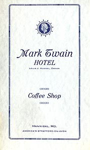
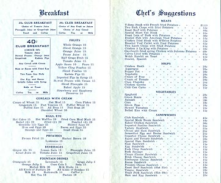
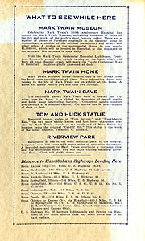

Mark Twain Hotel Menu
The Mark Twain Hotel first opened in 1906. When this special menu was prepared for centennial visitors in 1935, the special
MARK TWAIN SANDWICH
cost 40¢.
Courtesy Terrell Dempsey
(Hannibal, Missouri).


